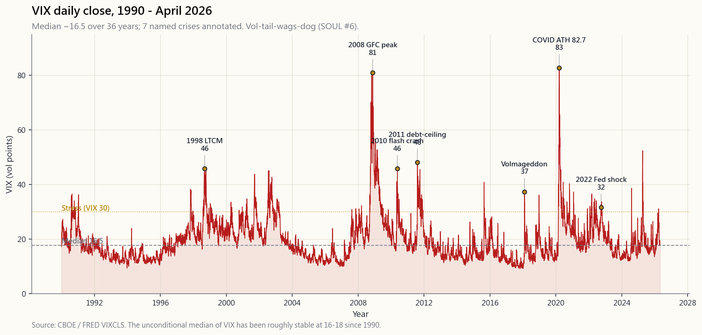
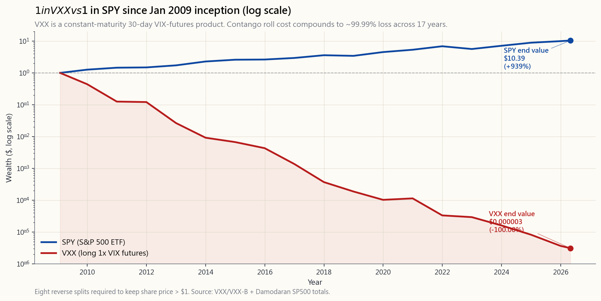

Week 40: VIX and the Volatility Complex
1. Why This Is Important
The VIX is the most quoted, least understood number in finance. CNBC says "the fear gauge spiked to 28" and viewers nod, but almost nobody on the receiving end of that headline can tell you what 28 actually means, what it predicts, or — crucially — why every retail product built on top of it tends to bleed money. Volatility is what wags the dog: in a real crisis it is the first thing that moves, and everything else rearranges itself around it. If you don't have a working model of how the volatility complex behaves, you will be the last one to know what just happened to your portfolio.
There are four reasons a serious investor needs to understand VIX cold:
This lesson gives you the formula, the term structure, the products, the wreckage record, and a framework for using vol as a tool rather than as a slot machine.
2. What You Need to Know
2.1 What VIX Actually Is — The Variance-Swap Formula
The CBOE redefined VIX in 2003 to be model-free. It does not assume Black-Scholes; it does not assume any model. It is the square root of a weighted strip of SPX option prices that replicates a 30-day variance swap.
The formal definition is
$$\text{VIX}^2 = \frac{2}{T} \sum_i \frac{\Delta K_i}{K_i^2} e^{rT} Q(K_i) - \frac{1}{T}\left(\frac{F}{K_0} - 1\right)^2$$
where $T = 30/365$, $K_i$ are the listed SPX option strikes, $Q(K_i)$ is the OTM mid-quote at strike $K_i$, $F$ is the forward, and $K_0$ is the strike just below $F$. The result is annualised — VIX = 20 means the option market is implying a 20% standard deviation of SPX returns over the next year, or equivalently $20/\sqrt{12} \approx 5.8\%$ over the next month.
Two implications most retail traders miss:
- VIX is not "expected volatility"; it is the price of a variance swap. It will systematically be higher than realised vol because option sellers demand a premium for unhedgeable jump risk. The long-run gap is ~3-4 vol points (the variance risk premium). That premium is what every covered-call and put-write strategy harvests.
- Daily expected SPX move = VIX / sqrt(252). A VIX of 20 implies a 1.26% daily standard deviation. A VIX of 40 implies 2.52%. This is the single most useful conversion to memorise.
![Time-series chart of CBOE VIX from 1990 through April 2026 with major spike events labelled — 1998 LTCM, 2008 GFC peak ~89, 2010 flash crash ~48, 2011 debt-ceiling/Europe ~48, 2018 Volmageddon ~50 intraday, March 2020 COVID lockdown all-time high 82.69, 2022 Fed shock high-30s, August 2024 carry-trade unwind. A horizontal reference line marks the all-period median around 16.5. Calm/normal/elevated/stressed/panic bands are shaded. The chart anchors the calibration anchors used through the rest of the lesson — VIX is more often than not in the 12-22 range with episodic regime spikes that last weeks, not minutes.](image/week40_vix_history.png)
2.2 The Term Structure — Why Contango Eats VXX
VIX itself is a spot index. You cannot trade it. What you can trade are VIX futures, which settle to a special opening quote of VIX on the third-Wednesday morning of the expiry month. The futures curve almost always slopes upward: front month at, say, 16, second month at 17, third at 17.8. This is contango.
Why? Because the option market knows that vol mean-reverts to ~16-18, but also knows there is some chance of a panic in the next 90 days. The further out you go, the more "tail" you're insuring against. The price the curve charges for that insurance, day after day, is roughly +0.05 to +0.10 vol points per trading day at the front, summing to ~+1.5 vol points/month.
Now layer on what VXX, UVXY, and similar products actually do: they hold a constant-maturity 30-day VIX-futures position, rolling daily from the front month to the second month. In contango, every roll is a sale at a low price and a purchase at a higher price. The annualised cost of that roll, historically, has been -25% to -40% in calm markets and -10% to -20% on average across a full cycle.
This is not a quirk. It is mathematical. There is a corollary to the rule that volatility leads everything else: the volatility surface is paying you to be short, until the day it isn't.
![Cumulative-growth chart on a log scale of $1 invested in VXX vs $1 invested in SPY from VXX's January 2009 inception through 2026, both adjusted for splits and reverse splits (VXX has had eight reverse splits to keep its share price above $1). SPY ends near $7 (~12%/yr CAGR, normal for a 17-year stretch from a recession low). VXX ends near $0.0001 — a 99.99% loss — visible only because the chart is log-scaled. The annual contango drag of 25-40% per year compounds into structural ruin. The chart is the visual proof that constant-maturity long-vol products are mathematically guaranteed to decay in a regime that exists ~85% of the time.](image/week40_vxx_decay.png)
2.3 The Product Wreckage Record
The full taxonomy of what has happened to retail investors in volatility ETPs:
- VXX (long 1x VIX futures, iPath): Launched Jan 30, 2009. Original VXX matured Jan 2019. Series B started Jan 2018 (overlap year). Cumulative return since 2009 inception, adjusted for the eight reverse splits required to keep the share price above $1: approximately -99.99%. A $1 investment is worth less than $0.0001.
- UVXY (long 1.5x — was 2x — VIX futures): Even worse. Decay is roughly 1.5x VXX's, so you're losing ~45-55%/yr in calm markets. Reverse-split count: 11 and counting.
- XIV (short 1x VIX futures, Credit Suisse ETN): The winner — until Feb 5, 2018. VIX doubled in a single afternoon as systematic vol sellers were forced to cover. XIV's NAV dropped ~96% in two hours. Credit Suisse triggered the acceleration clause and shut it down. Investors who held overnight got pennies.
- SVXY (short 0.5x VIX futures, ProShares): Was 1x until the same Feb 2018 event, when ProShares cut the leverage to 0.5x for survival. Still positive total return, but with much smaller upside than XIV's pre-Volmageddon glory days.
- VIX itself: Cannot be held. Spot VIX is a calculation, not a tradable. Every "VIX" product is really a VIX-futures product, and the futures live on a different curve than the spot.
2.4 VIX Levels and Spike Characteristics
Calibration anchors any sane investor should commit to memory:
- Median VIX (1990-2026): ~16.5. The all-time-low is 9.14 (Nov 2017). The 25th percentile is ~13, the 75th percentile is ~22.
- Calm: 12-15. Bull-market default state. SPX daily moves under 1%.
- Normal: 15-20. Long-run average. Healthy markets with periodic earnings noise.
- Elevated: 20-30. Correction, geopolitical shock, election year.
- Stressed: 30-50. Bear market, banking event, recession scare. Aug 2024 carry-trade unwind, Sept 2022 Fed shock both touched the high 30s.
- Panic: 50-80. Genuine crisis. 2008 (peak ~89), 2010 flash crash (~48), Aug 2011 debt-ceiling/Europe (~48), Feb 2018 Volmageddon (~50 intraday).
- Extreme: 80+. All-time high 82.69 on Mar 16, 2020 (COVID lockdown announcement). Only one other day above 80 in 36 years (2008 Lehman week).
$$\Delta\text{VIX} \approx -1.0 \times \Delta\text{SPX}\%$$
for normal moves (i.e., a -1% SPX day adds about +1 vol-point to VIX), but with severe convexity at the tails — a -5% SPX day might add +10-15 points, not +5. This convexity is exactly what long-vol payoffs harvest.
2.5 VVIX — Vol of Vol
VVIX is the implied volatility of VIX itself, computed from VIX options. It typically prints 70-110 in normal markets and spikes to 150-200 in crises. VVIX is the cleanest read on how stretched the options market thinks the vol surface is. When VVIX is at 80 and you're getting paid 12% to sell SPX puts, the market is pricing fairly. When VVIX is at 150 and you're getting paid 30%, you are not being overpaid — you are being paid for the very real risk that VIX itself jumps another 50%.
Practical rule: never sell vol when VVIX is rising fast. Even if VIX is already high. The vol-of-vol is the second derivative, and it's where the leverage in the system lives.
2.6 The Vol Risk Premium and How To Harvest It
The empirical fact that has built more careers than any other in derivatives: implied vol > realised vol, on average, by ~3-4 points/year in SPX. That gap is the variance risk premium (VRP). It is real, persistent, and explains the long-run return of every short-vol strategy from PUTW (cash-secured puts on SPX) to JEPI (SPX covered-calls + ELN) to SVXY itself.
Three ways to harvest VRP without blowing up:
What does not work for the long-run investor: long VXX, long UVXY, short SVXY, or any structure where the worst-case loss exceeds the position size. The barbell is the right framing: you can run a 90% beta portfolio and a 5-10% short-vol sleeve, but you cannot run a 95% short-vol portfolio. The blowup days take 2-3 years of carry to recover, and the carry isn't large enough to justify the leverage.
2.7 The 2018 Volmageddon Case Study
Feb 5, 2018, was the textbook example of vol-tail-wags-dog. The setup: SPX had been grinding higher with realised vol below 6% for months. VIX was pinned at 9-11. Short-vol products had attracted ~$2 billion in retail AUM. Pension funds and family offices were quietly running "vol-control" mandates that systematically sold more vol as realised vol stayed low — the same risk-parity logic that worked in calm regimes.
Then SPX fell 4% in the regular session. VIX spiked from 17 to 37 by the close. The XIV/SVXY products had to cover their short futures positions into a thin after-hours market. Their forced buying drove VIX futures even higher. By 4:15pm ET, XIV's NAV implied a 96% loss. Credit Suisse pulled the plug.
The lesson is not "don't sell vol." The lesson is: leverage on vol is fatal because vol itself is the leverage. A 1x short-vol position is already a leveraged bet on the variance risk premium. Stacking 1x fund leverage on top of that creates 2x effective leverage on a series with kurtosis of 30+. The math doesn't survive.
3. Common Misconceptions
4. Q&A Section
Q1: How do I actually use VIX in day-to-day decisions? A: Three uses. (1) Position sizing — when VIX > 25, cut new long-equity sizing in half versus when VIX < 15. (2) Options pricing — if you're about to sell a put and VIX < 14, you're underpaid; wait. If VIX > 30 and you're already long stock, that's premium income waiting to be collected via covered calls. (3) Regime — VIX > 30 for more than 5 sessions is a confirmed stress regime; rebalance across the four tranches, don't fight it.
Q2: Why don't more investors hold long-vol products as portfolio insurance? A: Because they're the most expensive insurance ever invented. Carry is -25% to -40%/yr. SPX puts cost 2-4%/yr for similar tail coverage. Buying VXX as insurance is like buying a fire-insurance policy that costs 30% of your house's value every year — even if it pays off in a fire, you'd have been better off with a $300/yr policy.
Q3: Can I time the VIX? A: Mean-reversion of level is real (median ~16-18). But the timing is brutal — VIX can stay elevated for months in a bear market. A naive "sell vol when VIX > 30" rule worked in 2010, 2011, 2018, 2020, 2022. It would have buried you in 2008 (VIX > 30 for 7 months) and could bury you in any genuine systemic crisis.
Q4: What's the difference between VIX and VVIX? A: VIX is 30-day implied vol of SPX. VVIX is 30-day implied vol of VIX. VVIX tells you how stretched the option-on-VIX market is — i.e., how convex the surface has become. Rising VVIX with rising VIX = panic compounding. Rising VIX with falling VVIX = mean-reversion likely.
Q5: Why did the original VXX get delisted in 2019? A: It had a 10-year maturity (issued Jan 2009 as an iPath ETN, not an ETF). Barclays redeemed it at NAV in Jan 2019. iPath rolled it into VXX Series B (launched Jan 2018, overlap design). The two are nearly identical economically — same constant-maturity 30-day VIX-futures methodology.
Q6: Is the short-vol trade dead after Volmageddon? A: No, but it's smaller. The XIV-style 1x ETN structure is gone. Today's short-vol exposure lives in: (1) covered-call ETFs (JEPI, JEPQ, QYLD), which are diluted versions of the trade; (2) cash-secured-put strategies (PUTW); (3) SVXY at 0.5x leverage. Total AUM in short-vol ETPs in 2026 is ~$50B, half the pre-2018 peak.
Q7: How do I read the VIX term structure to time entries? A: The classic gauge is VX1/VX2 ratio (front-month / second-month VIX futures). When ratio < 1.0 (backwardation), you're in stress — not a time to short vol. When ratio > 1.0 with normal contango (~0.95), you're in calm; selling defined-risk puts is reasonable. Tools like VIX Central or the CBOE term-structure page show this live.
Q8: What's the relationship between VIX and credit spreads? A: Tight, but with a lag. VIX is the "fast" risk indicator (intraday, options-driven). HY credit spreads (BAML HOAS) are the "slow" indicator (daily, dealer-driven). A spike in VIX without a corresponding move in HY spreads is usually noise; a coincident move in both is a regime shift. Cross-reference Week 33's HY-spread chart.
Q9: Should I include any vol exposure in a long-only retirement portfolio? A: Direct vol exposure, no. Indirect, yes — through covered-call ETFs (10-15% sleeve max) or PUTW-style cash-secured-put funds. These harvest VRP without the leverage. Run it as a barbell, with the vol risk taken as defined-risk option premia rather than as a long-VXX position.
Q10: How much of my portfolio should ever be long VXX or UVXY? A: For most investors: 0%. For a sophisticated tactical trader running a defined event thesis (e.g., "FOMC meeting tomorrow, vol is at 12, term structure is flat"), maybe 0.5-1.5% of NAV for a 2-7 day hold. Never as a strategic position. Never sized so a -50% day on the position would matter.
Q11: Why did the all-time-high VIX print on Mar 16, 2020 and not Mar 9 (the actual market low)? A: VIX measures next 30-day expected vol. By Mar 16, the option market was pricing in a full lockdown scenario for the following month — that's why the high print came after the worst single-day SPX drops. VIX is more reliably backward-looking than people assume.
Q12: Is there any reliable way to predict VIX spikes? A: No. The only structural predictor is VIX itself being abnormally low for an abnormally long time, which raises the probability of a spike but says nothing about timing. The vol-control deleveraging mechanism that triggered Volmageddon required a SPX move of >2% to start; you can't forecast that move with VIX. If you could, you wouldn't need VIX.
第40週：波動率指數及波動性產品複合體
1. 為何此課題至關重要
波動率指數是金融界被引用最多、卻最少人真正理解的數字。CNBC報道「恐慌指標飆升至28」，觀眾紛紛點頭，但幾乎沒有人能夠告訴你28究竟代表什麼意思、它能預測什麼，以及——最關鍵的——為何所有基於它構建的零售產品都傾向於持續虧損。波動性才是主宰市場的核心力量：在真正的危機中，它是最先作出反應的指標，其他一切都圍繞它重新排列。如果你對波動性複合體的運作方式沒有一個清晰的認識，你將是最後一個知道自己投資組合發生了什麼事的人。
一個嚴肅的投資者需要徹底了解波動率指數，原因有四：
本課提供計算公式、期限結構、相關產品、歷史慘況紀錄，以及一個將波動性作為工具而非老虎機使用的框架。
2. 你需要掌握的知識
2.1 波動率指數的真實面貌——方差掉期公式
芝加哥期權交易所於2003年將波動率指數重新定義為無模型的計算方式。它不假設Black-Scholes模型，不假設任何模型。它是一系列標普500指數期權價格的加權計算結果，用以複製30天方差掉期。
正式定義如下：
$$\text{波動率指數}^2 = \frac{2}{T} \sum_i \frac{\Delta K_i}{K_i^2} e^{rT} Q(K_i) - \frac{1}{T}\left(\frac{F}{K_0} - 1\right)^2$$
其中 $T = 30/365$，$K_i$ 為標普500指數期權的掛牌行使價，$Q(K_i)$ 為行使價 $K_i$ 的價外期權中間報價，$F$ 為遠期合約價格，$K_0$ 為低於 $F$ 的最近行使價。結果以年化表示——波動率指數為20，意味著期權市場隱含標普500指數回報在未來一年的標準差為20%，即未來一個月約為 $20/\sqrt{12} \approx 5.8\%$。
大多數零售交易者忽略的兩個重要推論：
- 波動率指數並非「預期波動性」，而是方差掉期的價格。它會系統性地高於已實現波動性，因為期權賣家要求對不可對沖的跳躍風險收取溢價。長期溢價約為3至4個波動性點（即方差風險溢價）。這一溢價正是每一個備兌認購期權及認沽期權沽出策略所收割的利潤。
- 標普500指數每日預期波動幅度 = 波動率指數 ÷ sqrt(252)。波動率指數為20，意味著每日標準差為1.26%。波動率指數為40，意味著每日標準差為2.52%。這是最值得牢記的單一換算公式。

2.2 期限結構——為何期貨升水蠶食VXX
波動率指數本身是即期指數，無法直接交易。你能夠交易的是波動率指數期貨，其交割價格為到期月份第三個週三早上的波動率指數特別開盤報價。期貨曲線幾乎總是向上傾斜：近月可能是16，次月17，第三個月17.8。這就是期貨升水。
原因何在？因為期權市場知道波動性均值回歸至約16至18，但同時知道未來90天有一定機會出現恐慌。往曲線越遠端看，所保障的「尾部」風險越多。曲線每天為這一保障收取的費用，前端約為每交易日+0.05至+0.10個波動性點，每月合計約+1.5個波動性點。
再看VXX、UVXY等類似產品的實際操作：它們持有恒定到期30天的波動率指數期貨倉位，每日將近月合約滾動至次月合約。在期貨升水狀態下，每次滾動都是以低價賣出、以高價買入。歷史上，在平靜市場中，這一滾動的年化成本為-25%至-40%，在完整周期平均則為-10%至-20%。
這並非巧合，而是數學必然。波動性主導一切這一規律有其推論：波動性曲面正在支付你做空的報酬，直至那一天它不再如此。

2.3 產品慘況紀錄
零售投資者在波動性交易所買賣產品中的完整傷亡名錄：
- VXX（做多1倍波動率指數期貨，iPath發行）：2009年1月30日上市。原版VXX於2019年1月到期。B系列於2018年1月開始（重疊年份）。自2009年成立以來，經八次合股調整後的累計回報：約-99.99%。投資1美元，如今價值不足0.0001美元。
- UVXY（做多1.5倍——曾為2倍——波動率指數期貨）：情況更差。衰減幅度約為VXX的1.5倍，在平靜市場每年損失約45至55%。合股次數：11次且仍在增加。
- XIV（做空1倍波動率指數期貨，瑞士信貸交易所買賣票據）：曾是大贏家——直至2018年2月5日。波動率指數在單一下午翻倍，系統性波動性做空者被迫平倉。XIV的資產淨值在兩小時內下跌約96%。瑞士信貸觸發加速條款並將其關閉。隔夜持倉者換回的只剩分文。
- SVXY（做空0.5倍波動率指數期貨，ProShares）：2018年2月同一事件後，ProShares將槓桿從1倍削至0.5倍以求存活，原名稱不變。總回報仍為正，但遠不及XIV在波動性崩潰前的輝煌。
- 波動率指數本身：無法持有。即期波動率指數僅是一個計算數字，非可交易資產。每一個「波動率指數」產品實際上都是波動率指數期貨產品，而期貨所處的曲線與即期指數有所不同。
2.4 波動率指數水平及飆升特徵
每位理智投資者都應熟記的校準錨點：
- 波動率指數中位數（1990至2026年）：約16.5。歷史最低為9.14（2017年11月）。第25百分位約13，第75百分位約22。
- 平靜：12至15。牛市常態。標普500指數每日波動低於1%。
- 正常：15至20。長期平均水平。健康市場，間有業績噪音。
- 偏高：20至30。調整、地緣政治衝擊、選舉年。
- 緊張：30至50。熊市、銀行業事件、經濟衰退恐慌。2024年8月套利交易平倉、2022年9月美聯儲衝擊均觸及30多的高位。
- 恐慌：50至80。真正危機。2008年（峰值約89）、2010年閃崩（約48）、2011年8月美國債務上限／歐洲債務危機（約48）、2018年2月波動性崩潰（盤中約50）。
- 極端：80以上。歷史最高位82.69出現於2020年3月16日（新冠封城宣布當日）。在36年歷史中，只有另一個交易日超越80（2008年雷曼周）。
$$\Delta\text{波動率指數} \approx -1.0 \times \Delta\text{標普500指數}\%$$
適用於正常波動（即標普500指數跌1%，波動率指數約加1個點），但在尾部具有顯著凸性——標普500指數單日跌5%，可能令波動率指數上升10至15點，而非5點。這一凸性正是做多波動性回報所收割的利潤。
2.5 VVIX——波動性的波動性
VVIX是波動率指數本身的引伸波幅，由波動率指數期權計算得出。正常市場中通常在70至110之間，危機時飆升至150至200。VVIX是衡量期權市場對波動性曲面緊張程度預期的最清晰指標。當VVIX處於80且你正獲得12%的收益沽出標普500指數認沽期權時，市場定價尚算合理。當VVIX處於150且你正獲得30%的收益時，你並非獲得超額回報——你是在為波動率指數本身再飆升50%的真實風險獲得補償。
實用規律：當VVIX快速上升時，切勿沽出波動性。即使波動率指數已處於高位。波動性的波動性是二階導數，也是系統槓桿的所在。
2.6 波動性風險溢價及其收割方式
衍生工具界最能成就職業生涯的實證事實：在標普500指數中，引伸波幅平均每年高於已實現波動性約3至4個點。這一差距即為方差風險溢價。它是真實存在的、持久的，並解釋了每一個做空波動性策略的長期回報，從PUTW（標普500指數現金擔保認沽期權）到JEPI（標普500指數備兌認購期權加股票掛鉤票據），乃至SVXY本身。
在不引爆自身的前提下收割方差風險溢價的三種方式：
對長期投資者而言不適用的做法：做多VXX、做多UVXY、做空SVXY，或任何最大虧損超出倉位規模的結構。槓鈴式策略才是正確框架：你可以持有90%的貝塔投資組合及5至10%的做空波動性配置，但不能持有95%的做空波動性投資組合。爆倉日需要2至3年的持有收益才能彌補，而持有收益的規模根本無法支撐這樣的槓桿。
2.7 2018年波動性崩潰案例研究
2018年2月5日，是波動性尾部主導市場的教科書案例。背景：標普500指數數月來持續走高，已實現波動性低於6%。波動率指數被壓制在9至11之間。做空波動性產品吸引了約20億美元零售資金。與此同時，大型機構投資者——養老基金、家族辦公室、波動性控制授權——正系統性地持續沽出更多波動性，因為已實現波動性持續低企——正是多年來在平靜環境下有效運作的風險平價邏輯。
其後，標普500指數在當週一正常交易時段下跌4%。波動率指數從17飆升至收市時的37。XIV及SVXY產品須在盤後稀薄市場中補回其做空期貨倉位。這一被迫買入將波動率指數期貨進一步推高。至下午4時15分東部時間，XIV的盤中資產淨值隱含96%的虧損。瑞士信貸當晚觸發加速條款。隔夜持倉的投資者換回的幾乎是一文不值。
這一教訓並非「不要沽空波動性」。教訓是：對波動性加槓桿是致命的，因為波動性本身就是槓桿。1倍做空波動性倉位已是方差風險溢價的槓桿押注。再在其上疊加1倍基金槓桿，即在峰度超過30的序列上形成2倍有效槓桿。數學上無法承受真正的波動性飆升。
3. 常見誤解
4. 問答環節
問題1：我在日常決策中應如何實際運用波動率指數？ 答：三種用途。（1）倉位規模——當波動率指數高於25時，新增股票長倉規模較波動率指數低於15時減半。（2）期權定價——若你即將沽出認沽期權而波動率指數低於14，你的回報不足；等待。若波動率指數高於30而你已持有股票，這是通過備兌認購期權收取期權金的機會。（3）市場區制——波動率指數高於30連續超過5個交易日，即為確認的緊張區制；按四個配置類別進行再平衡，不要逆勢而為。
問題2：為何更多投資者不持有做多波動性產品作投資組合保險？ 答：因為它們是有史以來最昂貴的保險。持有成本每年-25%至-40%。同等尾部保障的標普500指數認沽期權每年僅需2至4%。買入VXX作保險，就像購買一份每年保費佔房屋價值30%的火險——即使失火時獲得賠償，每年300元的保費早已更合算。
問題3：我能否把握波動率指數的時機？ 答：水平的均值回歸是真實存在的（中位數約16至18）。但時機把握極為困難——在熊市中，波動率指數可能持續數月高企。「波動率指數高於30時沽出波動性」這一簡單規律在2010年、2011年、2018年、2020年、2022年均奏效。但在2008年（波動率指數高於30持續7個月）會令你深陷泥沼，在任何真正的系統性危機中亦可能如此。
問題4：波動率指數與VVIX有何分別？ 答：波動率指數是標普500指數的30天引伸波幅。VVIX是波動率指數本身的30天引伸波幅。VVIX告訴你波動率指數期權市場有多緊張——即曲面的凸性有多大。波動率指數上升同時VVIX上升，是恐慌疊加。波動率指數上升同時VVIX下跌，則可能是均值回歸。
問題5：原版VXX為何於2019年退市？ 答：它有10年期限（2009年1月作為iPath交易所買賣票據發行，並非交易所買賣基金）。巴克萊於2019年1月按資產淨值贖回。iPath將其轉換為VXX B系列（2018年1月推出，有重疊設計）。兩者在經濟上幾乎相同——均採用相同的恒定到期30天波動率指數期貨方法論。
問題6：2018年波動性崩潰後，做空波動性的交易已死？ 答：不，但規模縮小了。XIV式1倍交易所買賣票據結構已消失。如今的做空波動性敞口存在於：（1）備兌認購期權交易所買賣基金（JEPI、JEPQ、QYLD），是這一交易的稀釋版本；（2）現金擔保認沽期權策略（PUTW）；（3）SVXY的0.5倍槓桿版本。2026年做空波動性交易所買賣產品的總資產管理規模約為500億美元，為2018年前高峰的一半。
問題7：如何通過閱讀波動率指數期限結構來把握入市時機？ 答：經典指標是VX1/VX2比率（近月/次月波動率指數期貨）。當比率小於1（期貨貼水），即處於緊張狀態——不是沽空波動性的時機。當比率大於1且正常期貨升水（約0.95）時，市場平靜，沽出有限風險認沽期權較為合理。VIX Central或芝加哥期權交易所期限結構頁面可實時顯示此數據。
問題8：波動率指數與信用利差有何關係？ 答：關係密切，但有滯後。波動率指數是「快速」風險指標（盤中，由期權驅動）。高收益信用利差（美銀美林高收益期權調整利差）是「慢速」指標（每日，由交易商驅動）。波動率指數飆升而高收益利差未有相應移動，通常是噪音；兩者同步移動則是區制轉換信號。請交叉參考第33週的高收益利差圖表。
問題9：我應否在只做多的退休投資組合中加入任何波動性敞口？ 答：直接波動性敞口，不宜。間接則可以——通過備兌認購期權交易所買賣基金（最多10至15%配置）或PUTW式現金擔保認沽期權基金。這些方式收割方差風險溢價而無需使用槓桿。以槓鈴式策略操作，將波動性風險以已知最大虧損的期權金形式承擔，而非持有VXX長倉。
問題10：我的投資組合中應有多少比例用於做多VXX或UVXY？ 答：對大多數投資者而言：0%。對於持有明確事件主題的成熟戰術交易者（例如「明天召開聯邦公開市場委員會議，波動性處於12，期限結構平坦」），或許可以用資產淨值的0.5至1.5%持有2至7天。絕對不能作為戰略性倉位。絕對不能規模大到一天跌50%對整體影響重大的程度。
問題11：為何波動率指數歷史最高記錄出現在2020年3月16日而非3月9日（實際市場低點）？ 答：波動率指數衡量的是未來30天的預期波動性。到3月16日，期權市場已在為下月的全面封城情景定價——這正是為何最高記錄出現在最惡劣的單日跌幅之後。波動率指數的後視性比人們通常認為的更強。
問題12：是否有任何可靠方法預測波動率指數飆升？ 答：沒有。唯一的結構性預測因子是波動率指數在異常低位持續異常長的時間，這提高了飆升的概率，但對時機毫無預測力。觸發波動性崩潰的波動性控制去槓桿機制需要標普500指數出現超過2%的跌幅才能啟動；而你無法用波動率指數預測這一跌幅。如果你能，你就根本不需要波動率指數了。
第40週：波動率指數與波動性商品複合體
1. 為何這個主題至關重要
波動率指數（VIX）是金融界被引用最多、卻最少人真正理解的數字。CNBC說「恐慌指標飆升至28」，觀眾點頭稱是，但幾乎沒有人能告訴你28到底代表什麼、能預測什麼，或者——最關鍵的是——為何所有建立在它之上的零售型商品，都傾向於持續虧損。波動性才是真正的主宰：在真正的危機中，它是第一個移動的指標，其他一切都圍繞著它重新排列。如果你對波動性複合體的運作方式沒有清晰的認知，當你的投資組合出了什麼問題時，你將會是最後一個知道的人。
以下是嚴肅的投資人必須徹底掌握波動率指數的四個理由：
本課程將帶給你公式、期限結構、相關商品、歷史慘案記錄，以及一套將波動性作為工具而非吃角子老虎機使用的框架。
2. 你需要掌握的知識
2.1 波動率指數的真實面貌——波動率交換公式
芝加哥選擇權交易所（CBOE）於2003年將波動率指數重新定義為無模型計算。它不假設Black-Scholes；它不假設任何模型。它是由一系列S&P 500指數選擇權價格加權計算的平方根，用以複製30天波動率交換。
正式定義如下：
$$\text{VIX}^2 = \frac{2}{T} \sum_i \frac{\Delta K_i}{K_i^2} e^{rT} Q(K_i) - \frac{1}{T}\left(\frac{F}{K_0} - 1\right)^2$$
其中 $T = 30/365$，$K_i$ 為上市的S&P 500指數選擇權履約價，$Q(K_i)$ 為履約價 $K_i$ 的價外中間報價，$F$ 為遠期價格，$K_0$ 為剛好低於 $F$ 的履約價。結果為年化數值——波動率指數=20，意味著選擇權市場隱含S&P 500報酬在未來一年的標準差為20%，或等同於未來一個月的標準差為 $20/\sqrt{12} \approx 5.8\%$。
大多數零售交易人忽略的兩個含義：
- 波動率指數不是「預期波動性」；它是波動率交換的價格。由於選擇權賣方需要針對無法避險的跳躍風險收取溢價，它在系統性上會高於已實現的波動性。長期差距約為3至4個波動率點（即波動率風險溢價）。這個溢價，正是每一個掩護性買權和賣權賣出策略所收割的來源。
- S&P 500指數的每日預期漲跌幅 = 波動率指數 ÷ sqrt(252)。波動率指數為20時，隱含每日標準差為1.26%。波動率指數為40時，隱含每日標準差為2.52%。這是最值得記憶的單一換算公式。
2.2 期限結構——為何正價差侵蝕VXX
波動率指數本身是即期指數，無法直接交易。你能交易的是波動率指數期貨，這些期貨在每個到期月份的第三個星期三早盤以特殊開盤報價結算。期貨曲線幾乎總是向上傾斜：近月合約約為16，次月合約約為17，第三個月約為17.8。這就是正價差（contango）。
為何如此？因為選擇權市場知道波動性均值回歸至約16至18，但同時也知道未來90天內存在一定的恐慌機率。曲線越往後延伸，保險涵蓋的尾部風險就越多。曲線每天為此保險收取的費用，在近端大約為每個交易日+0.05至+0.10個波動率點，每月累計約+1.5個波動率點。
再疊加上VXX、UVXY及類似商品實際的操作方式：它們持有固定到期30天的波動率指數期貨部位，每日滾動從近月換至次月合約。在正價差環境下，每次滾動都是以低價賣出、以高價買入。這種滾動的年化成本，在平靜市場歷史上為-25%至-40%，全週期平均為-10%至-20%。
這不是偶發現象，而是數學必然。隨之而來的推論是：波動性曲面在為做空提供報酬，直到某一天不再如此。
2.3 商品殘骸記錄
以下是零售投資人在波動性指數股票型商品（ETP）上損失的完整分類記錄：
- VXX（做多1倍波動率指數期貨，iPath）：於2009年1月30日上市。原始VXX於2019年1月到期。B系列於2018年1月啟動（有一年重疊期）。自2009年成立以來的累積報酬，調整維持股價在1美元以上所需的八次反向分割：約為-99.99%。1美元的投資，現值不足0.0001美元。
- UVXY（做多1.5倍——曾為2倍——波動率指數期貨）：表現更差。衰退幅度約為VXX的1.5倍，在平靜市場每年損失約45至55%。反向分割次數：11次，且仍在繼續。
- XIV（做空1倍波動率指數期貨，瑞士信貸指數投資證券）：曾經的贏家——直至2018年2月5日。當系統性波動性賣方被迫回補，當天下午波動率指數翻倍。XIV的淨值在兩小時內下跌約96%。瑞士信貸觸發加速清算條款並將其關閉。隔夜持倉的投資人僅能取回極少數。
- SVXY（做空0.5倍波動率指數期貨，ProShares）：在同一場2018年2月事件後，ProShares為求生存將槓桿從1倍降至0.5倍。整體總報酬仍為正，但遠不及XIV在波動性末日事件前的輝煌時代。
- 波動率指數本身：無法持有。即期波動率指數是一個計算值，而非可交易資產。每一個「波動率指數」商品，其實都是「波動率指數期貨」商品，而期貨的曲線與即期指數存在於不同的軌道上。
2.4 波動率指數水準與飆升特徵
任何理性投資人都應銘記於心的校準錨點：
- 波動率指數中位數（1990至2026年）：約16.5。歷史最低點為9.14（2017年11月）。第25百分位數約為13，第75百分位數約為22。
- 平靜：12至15。多頭市場的預設狀態。S&P 500指數每日漲跌幅低於1%。
- 正常：15至20。長期平均值。具有定期財報雜音的健康市場。
- 偏高：20至30。回檔、地緣政治衝擊、選舉年。
- 壓力：30至50。空頭市場、銀行業事件、經濟衰退疑慮。2024年8月日圓套利交易平倉潮和2022年9月聯準會貨幣政策衝擊均觸及30多高點。
- 恐慌：50至80。真實危機。2008年（高峰約89）、2010年閃崩（約48）、2011年8月美國債務上限/歐洲危機（約48）、2018年2月波動性末日（盤中約50）。
- 極端：80以上。歷史最高點82.69，出現於2020年3月16日（COVID疫情封鎖宣布當日）。36年間僅有另一個交易日突破80（2008年雷曼兄弟倒閉當週）。
$$\Delta\text{波動率指數} \approx -1.0 \times \Delta\text{S\&P 500指數}\%$$
適用於正常波動範圍（即S&P 500指數單日下跌1%，波動率指數約上漲1個波動率點），但在尾部具有明顯的凸性——S&P 500指數單日下跌5%，波動率指數可能上漲10至15點，而非5點。這種凸性，正是做多波動性的收益所能收割的來源。
2.5 VVIX——波動性的波動性
VVIX是波動率指數本身的隱含波動率，由波動率指數選擇權計算而得。在正常市場中通常印出70至110，危機時飆升至150至200。VVIX是對選擇權市場評估波動性曲面緊繃程度最清晰的讀數。當VVIX在80且你獲得12%的報酬賣出S&P 500指數賣權時，市場定價是合理的。當VVIX在150且你獲得30%的報酬時，你並未獲得超額補償——你只是在為波動率指數本身再跳升50%的真實風險而獲得補償。
實用原則：永遠不要在VVIX快速上升時賣出波動性。即使波動率指數已經處於高位也一樣。波動性的波動性是二階導數，也是系統槓桿的所在之處。
2.6 波動率風險溢價及其收割方式
這個讓衍生性商品業更多人成就事業的實證事實：在S&P 500指數中，隱含波動率平均每年高於已實現波動率約3至4個波動率點。這個差距就是波動率風險溢價（VRP）。它是真實的、持久的，並解釋了從PUTW（S&P 500指數現金擔保賣權）到JEPI（S&P 500指數掩護性買權加連動債券）再到SVXY本身，所有做空波動性策略的長期報酬。
三種收割波動率風險溢價而不爆倉的方式：
對長期投資人無效的做法：做多VXX、做多UVXY、做空SVXY，或任何最大損失超過部位大小的結構。槓鈴策略是正確框架：你可以持有90%的貝塔投資組合加上5至10%的做空波動性部位，但你無法建立95%的做空波動性投資組合。爆倉日需要2至3年的持有收入才能復原，而持有收入的規模不足以支撐這樣的槓桿。
2.7 2018年「波動性末日」案例研究
2018年2月5日是波動性尾部主宰全局的教科書式範例。背景：S&P 500指數持續攀升，數月來已實現波動性低於6%。波動率指數被壓制在9至11。做空波動性商品已吸引約20億美元的零售資金。退休基金和家族辦公室則悄悄執行「波動性控制」委任，在已實現波動性持續低迷的情況下系統性地賣出更多波動性——這與在平靜環境中有效的風險平價邏輯如出一轍。
然後S&P 500指數在常規交易時段下跌4%。波動率指數從17飆升至收盤時的37。XIV和SVXY商品必須在流動性薄弱的盤後市場回補其空頭期貨部位。它們的強制回補推動波動率指數期貨進一步走高。至美東時間下午4點15分，XIV的盤中淨值已隱含96%的損失。瑞士信貸當晚啟動加速清算條款。
這個教訓不是「不要賣出波動性」。教訓是：波動性上的槓桿是致命的，因為波動性本身就是槓桿。1倍做空波動性部位已然是對波動率風險溢價的槓桿賭注。在此之上疊加1倍基金槓桿，就創造了2倍有效槓桿，而其標的序列的峰度超過30。這道數學題，在真正的飆升面前根本無解。
3. 常見迷思
4. 問答集
問1：我如何在日常決策中實際運用波動率指數？ 答：三個用途。（1）部位大小——當波動率指數超過25時，新增多頭股票部位大小比波動率指數低於15時削減一半。（2）選擇權定價——如果你即將賣出賣權而波動率指數低於14，你的報酬不足，等待時機。如果波動率指數超過30而你已持有股票，那是可透過掩護性買權收取的權利金收入。（3）市場環境——波動率指數連續5個交易日超過30，即確認進入壓力環境；跨四個資金組跨重新進行再平衡，不要對抗市場。
問2：為何更多投資人不持有做多波動性商品作為投資組合保險？ 答：因為它們是有史以來最昂貴的保險。每年持有成本為-25%至-40%。S&P 500指數賣權通常每年僅需2至4%，即可提供類似的尾部保護。買入VXX作為保險，就像購買一份每年保費相當於房屋價值30%的火災保險——即使火災真的發生並獲賠，你本可以每年只花300元購買同等保障。
問3：我能掌握波動率指數的時機嗎？ 答：水準的均值回歸確實存在（中位數約16至18）。但時機判斷極為殘酷——在空頭市場中，波動率指數可以持續數月保持高位。「當波動率指數超過30時賣出波動性」的簡單規則，在2010年、2011年、2018年、2020年、2022年均有效。但在2008年（波動率指數連續7個月超過30）可能會讓你元氣大傷，在任何真正的系統性危機中也可能如此。
問4：波動率指數與VVIX有何不同？ 答：波動率指數是S&P 500指數的30天隱含波動率。VVIX是波動率指數本身的30天隱含波動率。VVIX告訴你波動率指數選擇權市場的緊繃程度——即波動性曲面的凸性有多強。波動率指數上升且VVIX上升 = 恐慌複合加劇。波動率指數上升且VVIX下降 = 均值回歸可能性較高。
問5：為何原始VXX在2019年下市？ 答：它有10年的到期期限（以指數投資證券形式由巴克萊銀行於2009年1月發行，而非指數股票型基金）。巴克萊銀行於2019年1月按淨值贖回。iPath將其滾入VXX B系列（於2018年1月啟動，設計有重疊期）。兩者在經濟本質上幾乎相同——均為相同的固定到期30天波動率指數期貨方法論。
問6：波動性末日事件後，做空波動性的交易是否已死？ 答：否，但規模更小。XIV式的1倍指數投資證券結構已消失。如今的做空波動性曝險存在於：（1）掩護性買權指數股票型基金（JEPI、JEPQ、QYLD），這些是稀釋版本的交易；（2）現金擔保賣權策略（PUTW）；（3）0.5倍槓桿的SVXY。2026年做空波動性指數股票型商品的總資產管理規模約為500億美元，約為2018年前高峰的一半。
問7：如何讀取波動率指數期限結構來把握進場時機？ 答：經典指標是VX1/VX2比率（近月/次月波動率指數期貨）。當比率小於1.0（逆價差）時，你處於壓力環境——此時不宜做空波動性。當比率大於1.0且呈現正常正價差（約0.95）時，你處於平靜環境；賣出定義風險的賣權是合理的。VIX Central或CBOE期限結構頁面等工具可提供即時數據。
問8：波動率指數與信用利差有何關係？ 答：關係緊密，但存在時間落差。波動率指數是「快速」風險指標（盤中、選擇權驅動）。高收益信用利差（美銀美林HOAS）是「慢速」指標（日頻、做市商驅動）。波動率指數飆升但高收益信用利差沒有相應移動，通常只是雜訊；兩者同步移動，則是環境轉換的信號。請參閱第33週的高收益信用利差圖表。
問9：我應該在純多頭的退休投資組合中納入任何波動性曝險嗎？ 答：直接的波動性曝險，不。間接的，可以——透過掩護性買權指數股票型基金（最多10至15%的部位）或PUTW式的現金擔保賣權基金。這些方式在不使用槓桿的情況下收割波動率風險溢價。以槓鈴方式執行，波動性風險以定義風險的選擇權權利金形式承擔，而非以持有做多VXX的形式承擔。
問10：我的投資組合中應有多少比例做多VXX或UVXY？ 答：對大多數投資人而言：0%。對於執行特定事件論述的老練戰術型交易人（例如「明天聯準會議息會議，波動率指數在12，期限結構平坦」），或許以淨值的0.5至1.5%持有2至7天。永遠不作為策略性部位持有。永遠不要讓該部位單日-50%的損失對投資組合造成顯著影響。
問11：為何波動率指數的歷史最高點出現在2020年3月16日，而非3月9日（市場實際最低點）？ 答：波動率指數衡量的是未來30天的預期波動性。到3月16日，選擇權市場已在為接下來一個月的完全封鎖情境定價——這就是為何高點出現在S&P 500指數最慘烈的單日暴跌之後。波動率指數是落後指標的程度，比人們普遍認為的更為明顯。
問12：是否有任何可靠的方法預測波動率指數飆升？ 答：沒有。唯一的結構性預測因子是波動率指數在異常低水準維持異常長的時間，這提高了飆升的機率，但對時機毫無指示。引爆波動性末日事件的波動性控制去槓桿機制，需要S&P 500指數跌超2%才能啟動；你無法用波動率指數預測這個跌幅。如果能預測，你就不需要波動率指數了。
第40周：波动率指数及波动性产品体系
1. 为何此题至关重要
波动率指数是金融领域被引用最多、却最鲜为人理解的数字。CNBC说"恐慌指标飙升至28"，观众点头称是，但几乎没有人能告诉你28到底意味着什么、它预示什么，以及——最关键的——为什么所有基于它构建的零售产品都在持续亏损。波动性才是那条摇狗的尾巴：在真正的危机中，它是最先移动的，其他一切都围绕它重新排列。如果你对波动性复合体的运作没有一个清晰的认知模型，你将是最后一个知道自己的投资组合发生了什么的人。
一个严肃的投资者需要彻底理解波动率指数，原因有四：
本课将为你呈现公式、期限结构、相关产品、历次事故记录，以及一套将波动性作为工具而非老虎机使用的框架。
2. 你需要掌握的知识
2.1 波动率指数的本质——方差互换公式
芝加哥期权交易所于2003年重新定义了波动率指数，使其无需依赖模型。它不假设布莱克-斯科尔斯模型；不假设任何模型。它是对一系列标普500期权价格进行加权求和，复制30天方差互换的平方根。
正式定义为
$$\text{VIX}^2 = \frac{2}{T} \sum_i \frac{\Delta K_i}{K_i^2} e^{rT} Q(K_i) - \frac{1}{T}\left(\frac{F}{K_0} - 1\right)^2$$
其中 $T = 30/365$，$K_i$ 为标普500指数期权的挂牌行权价，$Q(K_i)$ 为行权价 $K_i$ 处虚值期权的买卖中间价，$F$ 为远期价格，$K_0$ 为恰好低于 $F$ 的行权价。结果已年化——波动率指数为20意味着期权市场隐含标普500指数未来一年回报的标准差为20%，或等价地，未来一个月约为 $20/\sqrt{12} \approx 5.8\%$。
大多数零售交易者忽略的两个含义：
- 波动率指数不是"预期波动性"；它是方差互换的价格。它将系统性地高于已实现波动性，因为期权卖方要求为不可对冲的跳跃风险索取溢价。长期溢价约为3-4个波动率点（方差风险溢价）。该溢价正是每一个备兑看涨期权和看跌期权卖出策略所收割的。
- 标普500指数日预期波动幅度 = 波动率指数 ÷ √252。波动率指数为20意味着日标准差为1.26%。波动率指数为40意味着2.52%。这是最值得铭记的单一换算公式。
2.2 期限结构——为何期货升水侵蚀VXX
波动率指数本身是一个即期指数。你无法交易它。你可以交易的是波动率指数期货，其在到期月份第三个周三上午的特别开盘价时结算。期货曲线几乎总是向上倾斜：近月合约约16，次月约17，第三个月约17.8。这就是期货升水。
为什么？因为期权市场知道波动性均值回归至约16-18，但也知道未来90天内存在一定发生恐慌的概率。曲线延伸越远，你所保险的"尾部"就越多。曲线每天为此保险定价，近月大约每个交易日+0.05至+0.10个波动率点，每月累计约+1.5个波动率点。
再叠加VXX、UVXY及类似产品的实际操作：它们持有恒定到期日30天波动率指数期货头寸，每日滚动从近月换至次月。在期货升水环境中，每次滚动都是低价卖出、高价买入。该滚动成本在平静市场中年化约为-25%至-40%，跨越完整周期的平均水平约为-10%至-20%。
这不是一个特例。这是数学必然。与波动性引领一切这一规律相对应的推论是：波动率曲面在支付你做空的报酬，直到某一天它不再如此。
2.3 产品事故记录
零售投资者在波动性交易所交易产品中所遭受损失的完整分类：
- VXX（1倍做多波动率指数期货，iPath）：2009年1月30日上市。原版VXX于2019年1月到期。B系列于2018年1月启动（与原版重叠一年）。自2009年成立以来，经八次反向拆股后调整的累计收益：约-99.99%。1美元的投资价值不足0.0001美元。
- UVXY（1.5倍做多——曾为2倍——波动率指数期货）：更糟。衰减幅度约为VXX的1.5倍，平静市场中每年亏损约45-55%。反向拆股次数：11次且还在增加。
- XIV（1倍做空波动率指数期货，瑞士信贷交易所交易票据）：赢家——直到2018年2月5日。那天下午，系统性波动性卖家被迫平仓，波动率指数在单一下午翻倍。XIV的净值在两小时内下跌约96%。瑞士信贷触发加速清偿条款并将其关闭。隔夜持有的投资者所得寥寥无几。
- SVXY（0.5倍做空波动率指数期货，景顺）：2018年2月事件后，景顺将杠杆从1倍削减至0.5倍以求生存。总收益仍为正，但远不及XIV波动性末日前的辉煌。
- 波动率指数本身：无法持有。即期波动率指数是一个计算值，不可交易。每一个"波动率指数"产品实际上都是波动率期货产品，而期货存在于与即期不同的曲线上。
2.4 波动率指数水平与跳升特征
任何理性投资者都应铭记的校准锚点：
- 1990-2026年波动率指数中位数：约16.5。历史最低为9.14（2017年11月）。第25百分位约为13，第75百分位约为22。
- 平静：12-15。牛市默认状态。标普500指数日涨跌幅低于1%。
- 正常：15-20。长期平均水平。健康市场伴随周期性财报噪音。
- 偏高：20-30。回调、地缘政治冲击、选举年。
- 压力：30-50。熊市、银行业事件、衰退恐慌。2024年8月套利交易平仓、2022年9月美联储冲击均触及高30多。
- 恐慌：50-80。真正的危机。2008年（峰值约89）、2010年闪崩（约48）、2011年8月美国债务上限/欧洲债务危机（约48）、2018年2月波动性末日（盘中约50）。
- 极端：80以上。历史最高82.69，出现于2020年3月16日（新冠肺炎封锁宣布当日）。36年来另有唯一一日超过80（2008年雷曼兄弟倒闭当周）。
$$\Delta\text{VIX} \approx -1.0 \times \Delta\text{SPX}\%$$
适用于正常波动（即标普500指数下跌1%，波动率指数约上升1个波动率点），但在尾部具有显著凸性——标普500指数单日下跌5%可能使波动率指数上升10-15个点，而非5个。这种凸性正是做多波动性的回报所收割的。
2.5 VVIX——波动性的波动性
VVIX是波动率指数自身的隐含波动率，由波动率指数期权计算得出。正常市场中通常印在70-110，危机中跳升至150-200。VVIX是读取期权市场对波动率曲面拉伸程度判断的最清晰指标。当VVIX处于80而你因卖出标普500指数看跌期权获得12%的收益时，市场定价公平。当VVIX处于150而你获得30%的收益时，你并非获得了超额报酬——你所得报酬对应的是波动率指数本身再跳升50%的真实风险。
实用规则：当VVIX快速上升时，永远不要卖出波动性。即使波动率指数已经处于高位。波动性的波动性是二阶导数，也是系统杠杆所在之处。
2.6 方差风险溢价及其收割方式
衍生品领域为最多人职业生涯奠基的实证事实：在标普500指数中，隐含波动率平均高于已实现波动率约3-4个波动率点/年。这个差值就是方差风险溢价。它真实存在、持续稳定，并解释了从PUTW（标普500指数现金担保看跌期权）到JEPI（标普500指数备兑看涨期权+结构化票据）再到SVXY本身的所有做空波动性策略的长期收益。
三种不会爆仓的方差风险溢价收割方式：
对长期投资者不奏效的是：做多VXX、做多UVXY、做空SVXY，或任何最坏情形下亏损超过仓位本身的结构。哑铃式配置才是正确框架：你可以运行90%贝塔仓位加5-10%做空波动性套利，但你不能运行95%做空波动性的投资组合。爆仓日需要2-3年的持有成本才能弥补，而持有收入的规模根本不足以支撑这种杠杆。
2.7 2018年波动性末日案例研究
2018年2月5日是波动性尾巴摇动整条狗的教科书案例。背景：标普500指数已连续上涨数月，已实现波动性低于6%。波动率指数被压在9-11。做空波动性产品已吸引约20亿美元零售规模。养老基金和家族理财办公室悄然运行"波动率控制"授权，在已实现波动性保持低位时系统性卖出更多波动性——与平静机制下奏效的风险平价逻辑如出一辙。
然后标普500指数在正常交易时段下跌4%。波动率指数从17跳升至收盘的37。XIV/SVXY产品不得不在稀薄的盘后市场中平仓其做空的期货头寸。其被迫买入进一步推高了波动率指数期货。到美东时间下午4点15分，XIV的净值隐含亏损达96%。瑞士信贷当晚启动清偿条款。
教训不是"不要卖出波动性"。教训是：波动性上的杠杆是致命的，因为波动性本身就是杠杆。1倍做空波动性头寸已经是对方差风险溢价的杠杆押注。在此之上叠加1倍基金杠杆，对一个峰度超过30的序列形成了2倍有效杠杆。数学上无法承受。
3. 常见误区
4. 问答环节
Q1：我在日常决策中如何实际使用波动率指数？ 答：三种用途。（1）仓位规模——当波动率指数>25时，新建股票多头头寸的规模减半，相比波动率指数<15时。（2）期权定价——如果你准备卖出看跌期权但波动率指数<14，你所得报酬不足，等待更好时机。如果波动率指数>30且你已持有股票，那就有权利金等待通过备兑看涨期权收取。（3）机制判断——波动率指数>30持续超过5个交易日是确认压力机制；在四个资金池间再平衡，不要强行对抗。
Q2：为什么没有更多投资者持有做多波动性产品作为投资组合保险？ 答：因为它们是有史以来最昂贵的保险。持有成本每年-25%至-40%。标普500指数看跌期权以类似的尾部覆盖成本每年2-4%。买入VXX作为保险，就像购买一份每年花费你房屋价值30%的火险——即使在火灾中赔付，你本来用每年300元的保单会更划算。
Q3：我能择时交易波动率指数吗？ 答：水平的均值回归是真实的（中位数约16-18）。但时机极为残酷——在熊市中波动率指数可以持续数月处于高位。"波动率指数>30时卖出波动性"的简单规则在2010年、2011年、2018年、2020年、2022年都奏效。在2008年（波动率指数>30持续7个月）可能会埋葬你，在任何真正的系统性危机中都可能如此。
Q4：波动率指数和VVIX的区别是什么？ 答：波动率指数是标普500指数的30天隐含波动率。VVIX是波动率指数自身的30天隐含波动率。VVIX告诉你波动率指数期权市场的拉伸程度——即曲面的凸性有多大。波动率指数上升伴随VVIX上升 = 恐慌叠加恐慌。波动率指数上升伴随VVIX下降 = 均值回归可能性较大。
Q5：原版VXX为何在2019年退市？ 答：它有10年期限（2009年1月以iPath交易所交易票据形式发行，非交易所交易基金）。巴克莱于2019年1月按净值赎回。iPath将其滚入VXX B系列（2018年1月上市，重叠设计）。两者在经济上几乎相同——相同的恒定到期日30天波动率指数期货方法论。
Q6：波动性末日后，做空波动性交易是否已死？ 答：没有，但规模缩小了。XIV式的1倍交易所交易票据结构已消亡。今天的做空波动性敞口存在于：（1）备兑看涨期权交易所交易基金（JEPI、JEPQ、QYLD），是该交易的稀释版本；（2）现金担保看跌期权策略（PUTW）；（3）0.5倍杠杆的SVXY。2026年做空波动性交易所交易产品的总规模约500亿美元，为2018年前峰值的一半。
Q7：如何读取波动率指数期限结构来判断入场时机？ 答：经典指标是VX1/VX2比率（近月/次月波动率指数期货）。当比率<1.0（期货贴水）时，处于压力状态——不是做空波动性的时机。当比率>1.0且期货升水正常（约0.95）时，处于平静状态；卖出有限风险看跌期权是合理的。VIX Central或芝加哥期权交易所期限结构页面可实时显示这一数据。
Q8：波动率指数与信用利差的关系是什么？ 答：紧密，但有滞后。波动率指数是"快速"风险指标（盘中，由期权驱动）。高收益信用利差（美银美林HOAS）是"慢速"指标（每日，由做市商驱动）。波动率指数跳升但高收益利差无对应变动，通常是噪音；两者同步移动则是机制转换。与第33周的高收益利差图表交叉参考。
Q9：长期持有型股票养老投资组合中应纳入任何波动性敞口吗？ 答：直接波动性敞口，不应该。间接敞口，可以——通过备兑看涨期权交易所交易基金（最多10-15%配置）或PUTW式现金担保看跌期权基金。这些产品在没有杠杆的情况下收割方差风险溢价。以哑铃式配置运行，以有限风险的期权权利金形式承担波动性风险，而非通过做多VXX的头寸。
Q10：我的投资组合中做多VXX或UVXY的比例应该有多高？ 答：对大多数投资者：0%。对运行有明确事件逻辑的老练战术交易者（例如："明天美联储会议，波动率指数在12，期限结构平坦"），持仓2-7天，或许占净值的0.5-1.5%。永远不作为战略性头寸。永远不要将其规模设定为单日-50%会产生实质影响的水平。
Q11：为何历史最高波动率指数出现在2020年3月16日而非3月9日（实际市场低点）？ 答：波动率指数衡量的是未来30天的预期波动性。到3月16日，期权市场已在对接下来一个月的全面封锁情景进行定价——这就是高点出现在最糟糕的单日标普500指数跌幅之后的原因。波动率指数的回顾性比人们通常认为的更强。
Q12：有可靠方法可以预测波动率指数跳升吗？ 答：没有。唯一的结构性预测指标是波动率指数在异常长的时间内异常偏低，这会提高跳升的概率，但对时机毫无指示。触发波动性末日的波动率控制去杠杆机制需要标普500指数超过2%的下跌才能启动；你无法用波动率指数预测这一下跌。如果可以，你根本不需要波动率指数。